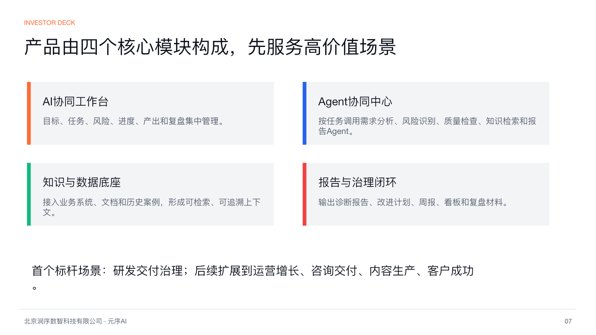

01
强痛点
需求不清、风险发现晚、延期和返工直接影响交付周期、客户满意度和管理成本。
Investor Business Plan · 2026.07
润序数智科技有限公司面向复杂知识工作，提供项目管理体系诊断、风险预警、Agent协同与交付治理闭环。机会不在替代飞书、Jira或禅道，而在连接这些工具，把分散过程数据转化为可解释的管理判断和行动建议。
项目管理正在从“记录工具”进入“交付治理平台”。企业已有大量协作数据，但管理者仍难以稳定看到需求质量、交付风险、阻塞原因和改进闭环。
需求不清、风险发现晚、延期和返工直接影响交付周期、客户满意度和管理成本。
诊断、实施、专属云和年度订阅组合收费，定价锚点是管理改善和项目损失减少。
从研发交付切入，后续可扩展到运营增长、咨询交付、内容生产和客户成功。
用3-5个标杆客户验证付费意愿、ROI量化和交付标准化能力。
协同工具、项目工具、知识库和聊天记录各自沉淀数据，但缺少统一任务模型、证据链和可执行的管理闭环。
PRD、任务和验收标准散落在文档、表格与聊天记录中，边界不清导致反复返工。
项目经理靠周会和人工追问识别风险，问题暴露时已经影响交付周期。
管理者看到汇总结果，却看不到阻塞依赖、资源瓶颈和责任链路。
项目结束后经验留在个人脑子里，下一次仍然重复同样的问题。
飞书、Jira、禅道、Git、客服和知识库各管一段，缺少统一判断层。
通用大模型能生成文本，但缺少权限、证据、流程和责任边界。
企业数字化工具已经普及，AI能力逐步成熟。新的价值不只是“更快写报告”，而是把过程数据治理为可解释、可追责、可复用的管理系统。
所有存在跨团队、跨项目、跨知识工作的企业和机构，处于企业协作软件、AI应用和管理咨询的交叉市场。
软件研发、数字化项目、咨询交付、内容运营等团队最先具备数据基础和付费动机。
前1-2年目标20-50家企业客户；按年化10-30万元/客户，形成约200万-1500万元收入区间。
Delivery OS默认以只读方式接入客户现有工具，形成统一任务模型，再由Agent体系输出诊断、建议、看板、周报和复盘材料。

接入飞书、表格、Jira、禅道、Git、文档、知识库和历史项目。
把需求、任务、缺陷、风险、成员、文档和产出映射为统一任务模型。
调用需求分析、风险识别、质量检查、效能分析和报告生成Agent共同工作。
输出诊断报告、改进计划、看板、审批回写、通知和复盘沉淀。
早期不做低价工具账号竞争，定价锚点放在项目延期、返工、管理人力和客户满意度改善上。
交付项目健康诊断、问题清单、风险判断和改进路线。
配置流程、字段、知识库、看板、Agent和审批回写机制。
按空间、账号、连接器、Agent任务量和场景模板收费。
满足高安全、数据隔离、审计和SLA要求的企业客户。
最佳早期ICP是正在使用飞书、表格、Jira、禅道等工具，但仍无法稳定看到需求质量、交付风险、阻塞原因和改进闭环的企业团队。
20-300人；需求变化快、项目风险高、研发和产品协作压力大。
50-1000人；跨部门项目多、供应商协同难、过程难追溯。
10-200人；顾问交付依赖个人经验，报告生产和复盘成本高。
5-100人；活动、素材、任务和复盘分散，推进靠人工催办。
Delivery OS的差异是连接现有工具，输出证据化诊断、Agent协同建议和持续治理闭环。
| 替代方案 | 客户现在怎么做 | 主要不足 | Delivery OS切入点 |
|---|---|---|---|
| 飞书 / 钉钉 / 企微 | 协同、审批、文档、消息 | 不直接给项目治理判断 | 在现有协作数据上形成管理诊断 |
| Jira / 禅道 / TAPD | 需求、任务、缺陷、迭代 | 记录强，复盘和跨项目洞察弱 | 跨项目解释风险与阻塞原因 |
| BI / 数据看板 | 指标展示和趋势分析 | 能看结果，难解释原因和行动 | 把指标转化为行动建议和责任链路 |
| 管理咨询 / PMO | 人工诊断、制度建设、项目跟踪 | 成本高，依赖个人经验 | 把经验沉淀成规则、模板和Agent流程 |
| 通用大模型 | 问答、总结、报告生成 | 缺少权限、证据和流程闭环 | 受控Agent、证据链和审批回写 |
单纯调用大模型并不构成壁垒。Delivery OS需要把项目治理方法、客户过程数据、规则引擎、模型评测和受控Agent机制沉淀为系统能力。
沉淀目标、需求、任务、缺陷、风险、文档、人员、产出的关系图谱。
CMMI/IPD/项目治理规则负责稳定判断，大模型负责理解、解释和建议。
每个结论关联来源系统、字段、更新时间、模型版本和判断依据。
Agent具备独立身份、权限范围、工具白名单、预算、超时和人工审批机制。
SaaS、专属云、私有化共用代码基线，适配不同安全要求。
用诊断结果、采纳率和历史项目反馈持续训练规则、模板和提示策略。
第一阶段成功标准是客户愿意为诊断/实施付费，报告被管理层采纳，风险识别和周报复盘明显减少人工工作量。
飞书/表格导入、需求分析Agent、风险诊断报告。
连接器、知识库、看板、周报/复盘、人工审批回写。
标准套餐、专属云部署、行业模板、客户成功流程。
多场景Agent市场、生态连接器、私有化交付包。
当前能力基础包括项目管理体系、CMMI/IPD、需求质量评估、AI Agent产品设计、企业交付与诊断。下一阶段应补齐销售、行业方案、连接器工程、模型评测和客户成功能力。
项目管理体系、CMMI/IPD、需求质量评估、AI Agent产品设计、企业交付与诊断。
标杆客户销售、行业解决方案、连接器与数据工程、模型评测与安全治理、客户成功。
融资金额为当前BP建议口径，可按实际融资计划、估值和出让比例调整。
融资后12个月目标：完成MVP，交付3-5个标杆客户，沉淀2-3个标准场景模板，形成可复制的诊断 + 平台订阅销售路径。
如果以下问题被验证，Delivery OS就不是一次性咨询项目，而是可以从服务型收入走向平台型收入。